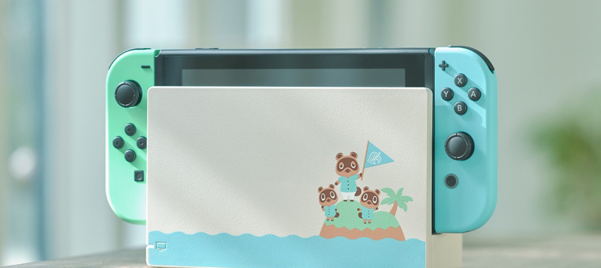
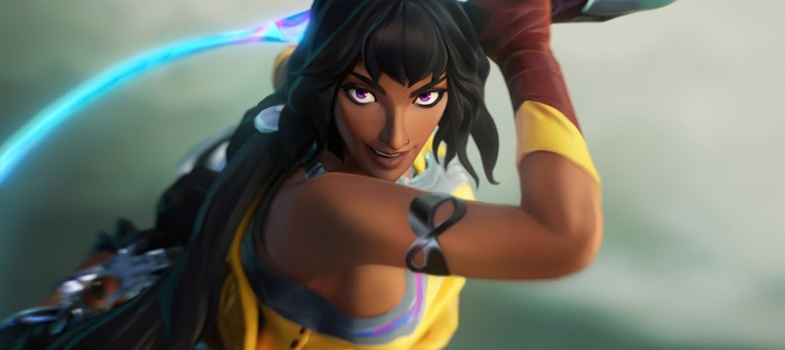

Трассировка лучей и поддержка DualSense — детали и системные требования PC-версии Marvel's Spider-Man

Sony, Insomniac Games и Nixxes Software поделились техническими подробностями PC-версии Marvel's Spider-Man, которая станет доступна в августе этого года. Создатели порта заявили, что геймеры увидят трассировку лучей для отражений, DLSS, сглаживание DLAA и кучу других опций.
Например, порт получит полноценную поддержку мониторов с соотношением сторон 21:9 или 32:9 — также Marvel's Spider-Man сможет работать сразу на трех мониторах, если захотите.
Из дополнительных графических опций появится настройка SSAO, фильтрация текстур, качество детализации объектов, тени и многое другое. Еще Nixxes Software заявляет нативную поддержку DualSense с адаптивными триггерами и отдачей, удобную раскладку под клавиатуру и мышь, а также достижения и облачные сохранения в Steam и Epic Games Store.
Геймплей The Last Case of Benedict Fox — метроидвания про детектива с напарником демоном

Разработчики The Last Case of Benedict Fox, анонсированной на презентации Xbox, опубликовали ролик, в котором подробнее рассказали о своей игре.
Это метроидвания. Главный герой детектив Бенедикс Фокс принялся за расследование убийства молодых супругов и пропажи их ребенка в поместье. Помогать ему будет демон из потустороннего мира.
С помощью уникальных способностей демона детектив сможет изучать воспоминания и эмоции умерших людей, погружаясь в параллельный мир — лимб. Там Фокс столкнется уже с другими демонами, против которых он может применять как орудия из мира настоящего, так и способности личного демона.
Стиль и демон-помощник вдохновлены произведениями Говарда Лавкрафта. Игра выйдет весной 2023 года на PC и Xbox Series S|X.
Жертвы взлома игры Axie Infinity получат лишь треть от потерянных средств
Студия Sky Mavis — разработчик блокчейн игры Axie Infinity, сообщила, что начнет возмещать средства жертвам взлома, в результате которого было похищено $617 миллионов в криптовалюте. Хак произошел ранее в этом году, тогда злоумышленники вывели со счетов $25.5 миллионов в USDC и 173600 Ether, стоимость которого на тот момент составляла $591.2 миллиона. Согласно расследованию ФБР, за взломом стояла группа северокорейских хакеров.
Как заявила студия, пострадавшие от взлома игроки Axie Infinity смогут вернуть равнозначную сумму в Ether, которую они потеряли во время взлома. Однако если учесть, что со взлома в марте стоимость Ethereum рухнула в три раза, то Sky Mavis возместит лишь $216.5 миллионов пострадавшим. Однако учитывая волатильность криптовалют, есть шанс, что однажды ETH снова достигнет прошлых высот.
В апреле Sky Mavis привлекла $150 миллионов инвестиций для помощи в выплате пострадавшим. Возврат средств начнется 28 июня.
Axie Infinity — самая популярная игра из категории "игра-и-зарабатывай", где игроки коллекционируют и генерируют NFT-существ, которых можно отправлять на битвы друг с другом. Эти NFT можно продавать другим игрокам, за что студия берет процент. На февраль этого года Axie Infinity провела операций с NFT на 4 миллиарда долларов.
Однако сейчас, когда рынок NFT лишился большей части своего хайпа, число игроков Axie Infinity упало с 2.7 миллионов в ноябре до четверти от этого значения в мае.
В Fall Guys сыграло 20 миллионов человек после перехода на условно-бесплатную модель

Разработчики Fall Guys объявили в твиттере, что спустя 48 часов после перехода на условно-бесплатную модель в игру сыграло более 20 миллионов человек.
Этому результату, конечно, также поспособствовал релиз на консоли Xbox и Nintendo Switch. Ранее игра была доступна только на PlayStation и PC.
Также у Fall Guys появилась полная поддержка кроссплея между всеми платформами и кросс-прогресс.
Ещё разработчики добавят в королевскую битву редактор карт, однако дату его выхода не назвали.
МИД РФ: Китай готов заменить иностранных производителей технологий на российском рынке
Посол России в Пекине Андрей Денисов заявил, что Китай готов заменить иностранных производителей в сфере технологий, микроэлектроники, автомобилей на российском рынке. Многие компании пока боятся вторичных санкций.
Место на нашем рынке освобождается. Китайские компании-производители различных видов продукции готовы занять на нём место, но для того, чтобы освоиться… нужно какое-то время.
Андрей ДенисовРанее о своём уходе из России объявили Acronis, Arbor (Netscout), Atlassian (Jira), Autodesk, Avast, AWS, Canonical, Coursera, Citrix, Docker, ESET, Figma, Fiverr, Globalstar, GoDaddy, Google Cloud, Grammarly, IBM, Microsoft и ряд других крупных компаний.
Пекин, в свою очередь, готов воспользоваться открывающимися на российском рынке возможностями.
Epic Games Store получил систему рейтингов для борьбы с ревью-бомбингом

Epic Games Store продолжает получать обновления функционала — не так быстро и не так масштабно как хотелось бы многим, но хоть что-то. На этот раз разработчики решили взяться за систему пользовательских обзоров.
Недавнее обновление добавило в EGS систему рейтингов и опросов, которые геймеры будут видеть через определенные промежутки времени, сыграв в ту или иную игру. Собранная таким образом информация станет использоваться для наполнения страничек игр.
Одна из особенностей такой системы в том, что она лишает возможности проводить координированные акции. Пользовательские обзоры сейчас популярнее, чем мнения профессиональных критиков во многих сферах, но их открытость — это уязвимость для манипуляции. В частности речь идет о ревью-бомбинге, когда продукты и игры в частности, заваливают негативными отзывами. Причем, в такой ситуации в дело вступает стадный инстинкт, когда люди начинают ставить негативные оценки намеренно, присоединяясь к толпе, даже если их опыт вовсе не был таким уж негативным.
Epic пояснила, что их подход может снизить общее число отзывов, однако со временем позволит сформировать общую оценку, которую невозможно коллективно занизить или завысить в короткие сроки. Кроме того такой подход гарантирует, что оценки будут ставить те, кто действительно играл.
Система опросов, в свою очередь, будет включать широкий спектр тем с различными вариантами ответов. Благодаря ответам страницы будут получать определенные тэги, что позволит искать и фильтровать тайтлы.
Единственный минус такой системы в том, что многие геймеры будут просто игнорировать всплывающие окошки, но у EGS много пользователей, так что даже небольшого процента хватит для формирования оценки.
Симулятор охотника Way of the Hunter выйдет в августе

Издатель THQ Nordic опубликовал трейлер симулятора Way of the Hunter, в котором сообщил дату релиза. Выйдет игра 16 августа на PC, PS5 и Xbox Series.
С названием игры разработчики ни разу не шутили: весь ролик мы смотрим на то, как герой куда-то едет. Впрочем, путь охотника пролегал по весьма приятным локациям.
По сюжету, главному герою достается домик, который окружает красивая местность и множество диких зверей. Игрокам предстоит охотиться на живность и следить за своей безопасностью, поскольку не каждый зверь окажется безобидным.
Также сообщается, что играть можно будет вместе с друзьями, то есть устроить настоящую совместную охоту.
LEGO Star Wars: The Skywalker Saga привлекла пять миллионов игроков

Разработчики адвенчуры LEGO Star Wars: The Skywalker Saga объявили в твиттере, что с момента релиза игра привлекла свыше пяти миллионов игроков.
LEGO Star Wars: The Skywalker Saga также показала самый успешный старт среди всех остальных LEGO-игр. Тайтл до сих пор занимает лидирующие позиции в британском и американском чартах продаж.
Адвенчура доступна на PC, PS4, PS5, Xbox One, Xbox Series и Nintendo Switch. Она получила высокие оценки от критиков, некоторые из которых вовсе назвали ее одной из лучших игр по Star Wars.
Продажи Nintendo Switch достигли 25 миллионов в Японии
Nintendo можно поздравить с важным достижением — продажи Switch в Японии достигли 25 миллионов единиц. Они распределились следующим образом: 18 миллионов на обычную консоль, пять миллионов на Lite и два миллиона на OLED.
Это огромная цифра, теперь Switch третья по продаваемости консоль в стране за все время. Она есть у каждого пятого японца. Ей удалось обогнать 3DS. Лучше продажи были только у GameBoy с 32.4 миллионами и Nintendo DS с 32.9 миллионами.
Самой популярной игрой для платформы в стране остается Animal Crossing: New Horizons с 7.26 млн проданных копий. На втором и третьем месте Super Smash Bros. Ultimate и Mario Kart 8 Deluxe.
Пять минут зрелищного геймплея экшена Black Myth: Wukong
Не прошло и полных шести месяцев 2022 года, а Riot Games анонсировала уже четвертого нового чемпиона за этот срок для League of Legends. После Зери, Бел'Вет и Ренаты Гласк ей стала еще одна девушка — Нила.
В ролике она загадочно смотрит на Билджвотер — пиратский город во вселенной игры. Затем нам показывают ее способности: она может атаковать врагов хлыстом, телепортироваться на небольшие расстояния, у нее есть непродолжительный иммунитет к оглушению, а ультимативная способность позволяет создавать область, притягивающую врагов.
Нила будет занимать бот карты и отвечать за нанесение урона. Судя по способностям, это будет довольно опасный враг в умелых руках.
Неизвестно, когда появится Нила в игре, но возможность игры за Бел'Вет появилась спустя три недели с первого релиза.
League of Legends доступна бесплатно на PC.
Пять минут зрелищного геймплея экшена Black Myth: Wukong

На канале GameV появился свежий геймплей амбициозного экшена Black Myth: Wukong. В ролике главный герой сражается с противниками и изучает локации. Все выглядит на удивление зрелищно.
Black Myth: Wukong основана на романе XVI века "Путешествие на Запад", который крайне популярен в Китае. Примечательно, что главный герой романа — царь обезьян Сунь Укуну. За него и предстоит играть.
При разработке студия вдохновлялась God of War. Впрочем, это можно заметить и по геймплею.
Black Myth: WuKong разрабатывают на движке Unreal Engine 5. Точной даты выхода у игры все еще нет, но релиз ожидается на PC и консолях.
10 минут геймплея фанатского ремейка Silent Hill на Unreal Engine 5
Команда энтузиастов Codeless Studio поделилась новым геймплейным роликом своего фанатского проекта — они занимаются созданием собственного реймейка Silent Hill на основе Unreal Engine 5.
В ролике представлен уровень с начальной школой. Анимации в ремейке выглядят довольно дергано и тут явно нехватает эффектов постобработки, но окружающая среда и проработка на хорошем уровне.
С одной стороны, на новом движке все выглядит свежо, но не оставляет ощущение некой стерильности. Нет той классической атмосферы, что сделала Silent Hill культовой. Однако у этого фанатского ремейка есть преимущества в сравнении с другими — разработчики намерены довести работу до конца.
Файтинг LEGO Brawls с пиратами, ниндзя и роботами выйдет 2 сентября
Bandai Namco опубликовала новый трейлер LEGO Brawls, в котором объявила дату релиза — 2 сентября. Это еще один файтинг-броулер, в котором между собой дерутся уже человечки из кубиков. Судя по ролику, их будет много: от ниндзя до пиратов.
Можно будет не только сражаться, но и кастомизировать героев. В игре будет большое количество опций для настройки желтых датских человечков.
Игра будет доступна на PS4, PS5, Xbox One, Xbox Series S|X и Nintendo Switch. Пока без ПК.
Новый трейлер ILL с геймплейной сценой
Заключительным сюрпризом на стриме Future Games Show стал короткий трейлер от студии Team Clout. Команда продолжает работу над хоррором ILL, который захватил внимание в начале 2021 года благодаря серии роликов. С тех пор студия уже показывала короткий геймплейный ролик на Unreal Engine 5.
Новое видео, как и раньше, включает фирменных жутких существ, чем-то напоминая классический фильм "Нечто". Картинка также выглядит впечатляюще, хотя учитывая, что это Unreal Engine 5, на нем еще нужно постараться, чтобы испортить внешний вид.
До релиза ILL еще очень далеко.
Deadly Premonition 2 вышла в Steam по цене в 507 рублей
Во время презентации Future Games Show игру Deadly Premonition 2: A Blessing in Disguise выпустили на ПК в Steam. Ранее она была доступна только на Nintendo Switch.
Стоимость игры составляет 724 рубля. До 18 июня действует 30% скидка и цена составляет 507 рублей.
Однако стоит отметить сразу один подводный камень.
Внимание: Для работы Deadly Premonition 2: A Blessing in Disguise требуется контроллер. Игра с клавиатурой и мышью не поддерживается.
Японцы остаются преданы себе.
8 минут геймплея Outpost — смеси стратегии и мясного шутера
В апреле этого года на презентации Enter the Dragon показывали различные китайские игры, выходящие на PC, и одной из них оказалась Outpost (рабочее название). Уже тогда игра выглядели интригующе — смесь из зубодробительного шутера от первого лица и стратегии, при участии артиллерии, мехов, огромных орд врагов и летающих роботов из "Матрицы".
Во время вчерашней презентации Future Game Show показали новый трейлер, однако он получился коротким. К счастью, сейчас можно взглянуть на 8-минутный ролик, снятый во время последних игровых тестов. Видно, что качество еще сырое, но позволяет сформировать впечатление об Outpost... или как она будет называться на релизе. Так или иначе, но выглядит интересно, очень вероятно, что игра даже станет если не большим хитом, то завоюет преданную аудиторию любителей крошить полчища.
Ролик был сделан из туториала, где игрок, вооруженный винтовкой, отправляется собирать ресурсы. Тут есть бег по стенам, скольжения, и толпа зомби-мутантов, прорывающихся из-под земли.
Если сравнивать с другими играми, то напоминает микс из Sanctum, Orcs Must Die и Fortnite: Save the World, только в комплекте больше стратегических элементов.
Релизный трейлер VR-версии Green Hell
Студия Creepy Jar опубликовала трейлер, посвящённый выходу VR-версии симулятора выживания Green Hell в Steam. В ролике герой путешествует, охотится, разводит костёр, а также любуется развешанными по джунглям человеческими останками и жуткого вида гноящейся язвой на собственной руке.
Green Hell VR — это самая сложная и аутентичная игра на выживание для VR. В ней точно воссозданы опасные условия джунглей Амазонки. Оказавшись в одиночестве и в затруднительном положении, вы никогда не будете чувствовать себя в безопасности. Чтобы выжить, вам придется столкнуться со своими слабостями. Борьба с голодом, жаждой и усталостью станет неотъемлемой частью вашего путешествия. Нападения диких животных и тропические опасности могут настигнуть вас в любой момент. Поскольку вы не получите никакой помощи из внешнего мира, вам необходимо использовать свои навыки для изготовления инструментов и оружия, научиться строить убежища и лечить раны.
Переносом Green Hell в VR занималась студия Incuvo Games. Ранее она отметилась портами хорроров Layers of Fear и The Blair Witch. В конце прошлого года студию выкупила People Can Fly.
Игра доступна в Steam, где поддерживает шлемы Valve Index, HTC Vive и Oculus Rift. Также в Green Hell VR можно сыграть в Oculus Quest 2.
Пули, кровь и снова пули в ураганном трейлере экшена Gungrave G.O.R.E
В рамках Summer Game Fest студия Iggymob представила кинематографичный трейлер экшена от третьего лица Gungrave G.O.R.E. Игра явно вдохновенна серией Devil May Cry.
По сюжету Gungrave G.O.R.E., Грейв вместе со своей спутницей, девочкой Микой, выслеживает клан наркоторговцев Воронов. Действие игры развернётся в различных регионах Южной Азии: Гонконге, Камбодже, Вьетнаме, Малайзии и Сингапуре.
Игра выйдет осенью на PC, PS4, PS5, Xbox One и Xbox Series. Прохождение растянется примерно на 12 часов.
Анонсирован The Lord of the Rings: Return to Moria — сурвайвал в мире Толкина
Канал IGN опубликовал анонсирующий трейлер сурвайвала The Lord of the Rings: Return to Moria. Действие игры развернётся в Четвёртой Эпохе Средиземья — то есть речь пойдёт о гномах, которые пытаются вернуть своё уже после Саурона и Балрога.
Орков, впрочем, в подземельях Мории по-прежнему предостаточно, так что предстоит сражаться, а ещё ковырять гору киркой и ковать всякие полезные вещи. Даже распитие пива в игре присутствует, в общем, типичный гномий досуг.
Игру планируют выпустить в Epic Games Store весной 2023 года.
Ранний доступ Witchfire стартует скоро в EGS
Во время трансляции Summer Game Fest 2022 разработчики фэнтезийного шутера Witchfire из The Astronauts представили новый гемплейный трейлер игры. В нём создатели объявили, что тайтл скоро выйдет в ранний доступ EGS. Конкретную дату не назвали.
В видео протагонист истребляет толпы противников в окрестностях какой-то крепости.
Разработка Witchfire ведется с 2015 года силами небольшой команды. Релиз игры неоднократно переносился — сперва шутер должен был выйти в 2020 году, затем в 2021, а теперь вот плавно переехал на 2022.
Что касается выхода на консоли, то разработчики пока ничего не говорят, финальные платформы озвучат позже.
Новый геймплей дополнения The Delicious Last Course для Cuphead — релиз 30 июня
Разработчики из коллектива Studio MDHR в рамках шоу Summer Game Fest 2022 показали новые кадры игрового процесса дополнения The Delicious Last Course для хадркорного экшен-платформера Cuphead.
К счастью, дата релиза не изменилась — DLC выходит уже 30 июня, то есть спустя четыре года после анонса. В ролике показали сражение одним из боссов
В дополнении The Delicious Last Course Чашека, Кружека и примкнувшую к ним Золотую Чашу ждут захватывающие приключения на новом острове! Новое оружие, обереги и суперспособности Золотой Чаши – это как раз то, что надо, чтобы сразиться со звездным составом могучих боссов и помочь шеф-повару Солонкину с финальной, самой сложной переменой блюд.
К понятно из описания, игроки получат в свое распоряжение третьего играбельного персонажа — Золотую чашечку.
Над DLC вместе со Studio MDHR работал Том Бэнкрофт, бывший аниматор Disney, который приложил руку к "Алладину" и "Королю льву".
Cuphead доступна на PC, PS4, Xbox One и Nintendo Switch.
Доступна бесплатная демоверсия ритм-шутера Metal: Hellsinger
В Steam и на сайте Microsoft появилась возможность загрузить бесплатную демоверсию музыкального шутера Metal: Hellsinger для PC и Xbox Series соответственно. Причём в Steam кнопка загрузки демо-версии находится не по центру, а справа, над списком доступных языков.
На странице игры в PlayStation Store кнопку загрузки демо обнаружить не удалось. Вероятно, бесплатный пробник для PS5 станет доступен позже.
Кроме того, в рамках Summer Game Fest был представлен новый трейлер.
Metal: Hellsinger — шутер с элементами ритм-игр, в котором нужно уметь подстраиваться под музыку. Чем круче и точнее вы это делаете, тем выразительнее звучат композиции и мощнее становятся атаки главного героя.
Ранее The Outsiders объявила, что в шутере появится эксклюзивный трек, написанный Сержем Танкяном, солистом группы System of a Down. Помимо него, в написании саундтрека к игре приняли участие такие вокалисты, как Мэтт Хифи из Trivium, Микаэль Станне из Dark Tranquility, Бьорн Стрид из Soilwork и Алисса Уайт-Глаз из Arch Enemy.
Релиз Metal: Hellsinger состоится 15 сентября на PC, PS5 и Xbox Series.
Ремейк The Last of Us выходит на PlayStation 5 в сентябре
Слух о том, что ремейк первой The Last of Us выйдет 2 сентября одновременно на PlayStation и PC, подтвердился, но пока что частично. The Last of Us Part I действительно выходит 2 сентября на PlayStation 5, и уже открыт приём предварительных заказов.
Для поклонников игры приготовлено особое издание Firefly Edition, его можно купить только через PlayStation. В него, помимо самой игры, включены глава-приквел Left Behind, особый вариант обложки, переидание четырёх выпусков комиксов The Last of Us: American Dreams с новой обложкой, а также ряд ранних разблокировок в игре.
Игрокам обещают полную переработку оригинальной игры, точно воспроизведенный, но модернизированный игровой процесс, улучшенное управление, обновлённые спецэффекты, расширенные исследования и более насыщенные бои.
Проливной дождь и стрельба в геймплее Call of Duty: Modern Warfare II
На Summer Game Fest показали геймплейный ролик Call of Duty: Modern Warfare II, в котором команда героев выполняет боевую задачу под проливным дождём.
В ролике можно увидеть миссию под названием «Тёмные воды» с перестрелками, одна из которых разворачивается на борту огромного танкера, где из-за непогоды двигаются по палубе контейнеры — используя их в качестве щита.
При этом в самой истории появятся знакомые игрокам персонажи, которых создатели «переосмыслили» на новый лад.
Ранее разработчики сообщили, что в игре будет новая механика применения оружия, передовой ИИ и множество графических преимуществ. Релиз самой игры состоится 28 октября на PC, Xbox и PlayStation.
Вышел официальный тизер аниме Cyberpunk: Edgerunners

Netflix представил несколько роликов аниме Cyberpunk: Edgerunners по мотивам Cyberpunk 2077, включая официальный тизер и эксклюзивный отрывок.
Шоу будет состоять из десяти эпизодов и расскажет историю молодого наёмника, которому приходится выживать в Найт-Сити. Проектом занимаются CD Projekt Red, студия Trigger (Kill la Kill, Little Witch Academia) и композитор Акира Ямаока (Silent Hill).
Также создатели аниме опубликовали официальный постер и «закулисное» видео (доступно с русскими субтитрами), в котором поговорили о проекте и его связи с игрой. Премьера Cyberpunk: Edgerunners состоится в сентябре этого года.
Слух: Starfield может выйти в период с января по март 2023 года
Один из реддиторов обратил внимание на небольшую сноску на сайте Microsoft, когда захотел подписаться на сервис Xbox Game Pass. В ней сказано, что Starfield "ожидается" в начале 2023 года, то есть предположительно в период с января по март.
Изначально Bethesda отложила Starfield (и Redfall от Arkane Austin) до первой половины 2023 года. Возможно, Тодд Говард назовет точную дату на ивенте Xbox x Bethesda 12 июня.
В середине мая глава игрового подразделения Microsoft Фил Спенсер говорил, что игры выйдут, когда будут готовы. Кроме этого, о трудностях при разработке сообщали якобы бывший сотрудник Bethesda Game Studios и некий анонимный инсайдер. Они ругали движок и полеты в космосе.
F1 Manager 2022 выйдет в августе
Студия Frontier Developments раскрыла дату выхода симулятора F1 Manager 2022, в котором игроку предстоит возглавить команду "Формулы-1" и вывести ее в лидеры. Собрать в одном месте гонщиков своей мечты можно будет уже 30 августа. Тайтл будет доступен на PC, PS4, PS5, Xbox One и Xbox Series.
Впрочем, те, кто оформит предзаказ, смогут начать играть на 5 дней раньше, с 25 августа.
Заодно студия выпустила первый геймплейный трейлер, в котором успешно совместила гоночные заезды и таблицы Excel:
В F1 Manager 2022 представляет игрокам предстоит управлять командой "Формулы-1", нанимать водителей и инженеров, прокачивать автомобили и гоночные центры, учитывать бюджет и требования гонщиков, а также следить за множеством других мелочей.
Побережье Норвегии и таинственные события в первом трейлере хоррор-адвенчуры The Fold
Опубликован первый трейлер хоррор-адвенчуры от первого лица The Fold: Ingression. В ролике главный герой попадает в церковь где-то на территории побережья Норвегии. Буквально на входе начинают происходить пугающие события, а затем персонаж получает мистические способности.
Судя по ролику, будут исследования локаций, сражения с разными монстрами и использование экстраординарных сил.
Играть предстоит за молодого норвежца Амунда Врейма, который получил работу дезинсектором в церкве от своего отца. Тайтл пропитан темной атмосферой северной Европы и мистикой Лавкрафта.
Норвежец Амунд Врейм работает по совместительству дезинсектором и получил свое первое назначение в церкви Айхерад в Телемарке, Норвегия. Благодаря любопытству и исследованию окружения он оказывается во все более пугающих ситуациях. Он быстро понимает, что не одинок, а работа совсем не та, что ожидалась. Массивное сооружение датируется концом эпохи викингов, и как церковь, так и прилегающие территории хранят много тайн.
The Fold: Ingression выйдет в конце 2022 года на PC.
Создатели Frostpunk и This War of Mine подтвердили работу сразу над тремя играми

На прошлой неделе польская студия 11 bit опубликовала в твиттере отрывок из тизера новой игры, которую полноценно представят в рамках шоу PC Gaming Show 12 июня в 22-30 МСК.
После этого PR-менеджер компании Конрад Адамчевски в ответ на вопрос одного из пользователей подтвердил, что 11 bit studios работает сразу над тремя играми. Речь о Frostpunk 2, новом тайтле, который покажут 12 июня, и таинственной Project 8.
Последняя была анонсирована еще летом 2019 года, хотя разработка ведется еще с апреля 2018 года. Кроме названия, никаких деталей обнародовано не было. На тот момент 11 bit Studios заявила, что Project 8 будет не такой мрачной, как ее другие игры, но с тем же важным подтекстом.
По словам Адамчевского, над тремя играми параллельно работают три отдельные команды. Frostpunk 2, к слову, по-прежнему без даты релиза.
GTA Online может получить большое обновление про Майкла

На днях датамайнер rollschuh2282 нашел в файлах GTA V для PlayStation 5 и Xbox Series X|S упоминания возможного обновления для GTA Online, связанного с Майклом Де Санта — одним из главных героев сюжетной части игры.
В коде экшена появилась дополнительная точка респауна около съемочной площадки Record A Studios. Именно здесь в определенной части сюжета Майкл помогает режиссеру Соломону Ричардсу в работе над новым фильмом.
К слову, это не первый намек на большое обновление с участием Майкла. В одной из первых миссий обновления "Контракт" с Франклином персонаж, проезжая по киностудии, говорит, что здесь работает его друг в качестве продюсера.
Крупные контентные обновления для GTA Online обычно выходят летом и зимой, поэтому ждем анонса от Rockstar Games в ближайшие недели. Прошлое летнее обновление, Los Santos Tuners, вышло в июле 2021 года.
14 июня Xbox проведет расширенное игровое шоу

Xbox опубликовала информацию о том, как будет транслироваться Xbox & Bethesda Games Showcase. Шоу стартует 12 июня в 20-00 по Москве и будет транслироваться на разных площадках в 1080p и 60fps.
Хотя сама трансляция будет на английском, можно будет смотреть с русскими субтитрами.
Но самая важная информация заключается в том, что через два дня Xbox проведет расширенное шоу, на котором покажет все новые трейлеры, углубиться в информацию о новых играх и даст немного развлекательного контента. Продолжительность расширенного шоу составит около 90 минут.
Эксперты и аналитики ожидают, что основное шоу тоже будет длиться около 90 минут с учетом показов, вступительных речей Фила Спенсера и Тодда Говарда, промежуточных комментариев и других выступлений.
Microsoft называет Xbox & Bethesda Games Showcase крупнейшим игровым шоу года, так что будьте готовы к анонсам, премьерам и сюрпризам.
Одну из локаций S.T.A.L.K.E.R. показали с полностью новой графикой на современном движке

Моддер с ником Victor Frankenstein решил сделать ремастер-версию локации Подземелье «Агропрома» из культовой S.T.A.L.K.E.R.: Shadow of Chernobyl. Воссозданием уровня энтузиаст занимается на движке Unity.
Подробности своего проекта моддер раскрывать не стал, зато поделился первыми скриншотами и рендерами переработанных кровососа и учёного.
Что из себя представляет проект, пока неизвестно. Поскольку он создаётся на другом движке, можно предположить, что выйдет в виде самостоятельной модификации. Сейчас «ремастер» находится на ранней стадии разработки.
Ранее появились новые скриншоты глобального мода, который перенесёт всю зону из первой части S.T.A.L.K.E.R. в популярную выживалку DayZ.
Скриншоты


Diablo Immortal уже заработала более миллиона долларов — это только на смартфонах

Несколько дней назад на iOS и Android вышла релизная версия Diablo Immortal. И она уже заработала более миллиона долларов.
Как отмечается, половину этой суммы внести игроки из США, хотя на них приходится только 20% загрузок. Аудитория игры там составляет порядка 2 миллионов человек.
На второе место по доходу вышла Южная Корея — 10% от суммы. Зато количеству загрузок лидирует Бразилия, на долю которой приходится 12%.
Отметим, что игроки не слишком хорошо приняли проект. Им не понравилась жёсткая система монетизации. А вот критики оказались более благосклонными. По их мнению, игра вполне удалась. Они оценили игру на 81 балл и максимально возможных 100 на Metacritic.
Слух о старте первого сезона Battlefield 2042 ожидается 9 июня

По данным инсайдеров, первый сезон Battlefield 2042 стартует 9 июня, а 7 июня к нему выпустят несколько трейлеров.
Сообщается, что игроки увидят три трейлера: первый посвятят самому сезону, второй — новому специалисту Эвелине Лис, а третий — боевому пропуску.
Все ролики планируют выпустить одновременно, в 18:00 МСК. Примерно через 10 минут после публикации разные создатели контента начнут делиться своими впечатлениями о первом сезоне Battlefield 2042 и демонстрировать новый игровой процесс, запись которого запланирована на завтра.
Том Хендерсон пообещал подтвердить или опровергнуть возможную дату релиза сезона в этот понедельник. Напомним, что ранее датамайнер раскрыл возможные подробности первого сезона Battlefield 2042, рассказав в том числе о новом специалисте, премиальных боевых пропусках и технике.
Геймплей Call of Duty: Modern Warfare II покажут 9 июня, на Summer Game Fest 2022

Джефф Кили продолжает подогревать интерес к грядущей Summer Game Fest 2022 — сообщается, что 9 июня, в рамках выставки, покажут геймплей Call of Duty: Modern Warfare II.
Напомним, что мировая премьера шутера состоится 8 июня в 20:00 МСК — в этот день покажут дебютный ролик. Релиз самой игры запланирован на 28 октября для PC, Xbox Series и PS5 (также, вероятно, для PS4 и Xbox One).
Summer Game Fest 2022 пройдёт 9 июня в 21:00 МСК. Обещают показать 30-40 игр, в том числе Marvel's Midnight Suns, The Lord of the Rings: Gollum, Sonic Frontiers, Saints Row, MultiVersus, Starfield и не только.
В сеть слили скриншоты и геймплей мобильной Call Of Duty: Warzone

В сеть утекли скриншоты и запись геймплея мобильной версии Call Of Duty: Warzone, о разработке которой официально сообщили в начале марта.
Судя по всему, проект находится на ранней стадии разработки. По слухам, его могут выпустить до конца 2023 года. При этом в игре может вновь появиться знаменитая карта Верданск.
Ранее отмечалось, что в разработке мобильной Warzone участвуют сразу несколько студий: Beenox, Digital Legends, Solid State Studios и Demonware.
Скриншоты


Amazon Games издаст следующую игру Disruptive Games

Сегодня компания Amazon Games объявила, что издаст следующую приключенческую онлайн-игру от студии Disruptive Games. Тайтл будет основан на новой IP.
По словам Amazon Games, Disruptive Games откроет новый взгляд на жанр многопользовательских приключенческих игр, которые будут делать сильный упор на дизайн и богатый мир.
В Amazon Games мы сосредоточены на разработке и издании высококачественных игр, которые способствуют появлению крепких фанатских сообществ и заставляют людей проводить в них долгие годы. Для этого мы создаём собственные IP и выборочно становимся издателем внешних тайтлов от таких звёздных команд, как Disruptive Games.
Кристоф Хартманн, вице-президент Amazon GamesDisruptive Games принимала участие в разработке таких игр, как Tony Hawk's Pro Skater 1 + 2, Diablo II: Resurrected, Godfall и Orcs Must Die! Unchained. Название и подробности их новой игры пока не раскрываются. Из пресс-релиза стало известно, что она будет содержать кооперативные и соревновательные элементы.